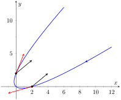
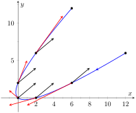
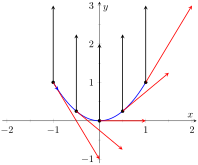
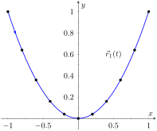
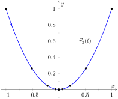

A common use of vector-valued functions is to describe the motion of an object in the plane or in space. A position function\(\vec r(t)\) gives the position of an object at time\(t\text{.}\) This section explores how derivatives and integrals are used to study the motion described by such a function.
Definition12.3.1.Velocity, Speed and Acceleration.
Let \(\vec r(t)\) be a position function in \(\mathbb{R}^2\) or \(\mathbb{R}^3\text{.}\)
Velocity
The instantaneous rate of position change, denoted \(\vec v(t)\text{;}\) that is, \(\vec v(t) = \vrp(t)\text{.}\)
Speed
The magnitude of velocity: \(\norm{\vec v(t)}\text{.}\)
Acceleration
The instantaneous rate of velocity change, denoted \(\vec a(t)\text{;}\) that is, \(\vec a(t) = \vec v\,'(t) = \vrp'(t)\text{.}\)
Example12.3.2.Finding velocity and acceleration.
An object is moving with position function \(\vec r(t) = \la t^2-t,t^2+t\ra\text{,}\)\(-3\leq t\leq 3\text{,}\) where distances are measured in feet and time is measured in seconds.
Find \(\vvt\) and \(\vat\text{.}\)
Sketch \(\vrt\text{;}\) plot \(\vec v(-1)\text{,}\)\(\vec a(-1)\text{,}\)\(\vec v(1)\) and \(\vec a(1)\text{,}\) each with their initial point at their corresponding point on the graph of \(\vrt\text{.}\)
\(\vec v(-1) = \la -3,-1\ra\text{,}\)\(\vec a(-1) = \la 2,2\ra\text{;}\)\(\vec v(1) = \la 1,3\ra\text{,}\)\(\vec a(1) = \la 2,2\ra\text{.}\) These are plotted with \(\vrt\) in Figure 12.3.3.(a). We can think of acceleration as “pulling” the velocity vector in a certain direction. At \(t=-1\text{,}\) the velocity vector points down and to the left; at \(t=1\text{,}\) the velocity vector has been pulled in the \(\la 2,2\ra\) direction and is now pointing up and to the right. In Figure 12.3.3.(b) we plot more velocity/acceleration vectors, making more clear the effect acceleration has on velocity.
(a)
(b)
Figure12.3.3.Graphing the position, velocity and acceleration of an object in Example 12.3.2
Since \(\vat\) is constant in this example, as \(t\) grows large \(\vvt\) becomes almost parallel to \(\vat\text{.}\) For instance, when \(t=10\text{,}\)\(\vec v(10) = \la 19,21\ra\text{,}\) which is nearly parallel to \(\la 2,2\ra\text{.}\)
To find the minimal speed, we could apply calculus techniques (such as set the derivative equal to 0 and solve for \(t\text{,}\) etc.) but we can find it by inspection. Inside the square root we have a quadratic which is minimized when \(t=0\text{.}\) Thus the speed is minimized at \(t=0\text{,}\) with a speed of \(\sqrt{2}\)ft⁄s. The graph in Figure 12.3.3.(b) also implies speed is minimized here. The filled dots on the graph are located at integer values of \(t\) between \(-3\) and 3. Dots that are far apart imply the object traveled a far distance in 1 second, indicating high speed; dots that are close together imply the object did not travel far in 1 second, indicating a low speed. The dots are closest together near \(t=0\text{,}\) implying the speed is minimized near that value.
Example12.3.4.Analyzing Motion.
Two objects follow an identical path at different rates on \([-1,1]\text{.}\) The position function for Object 1 is \(\vec r_1(t) = \la t, t^2\ra\text{;}\) the position function for Object 2 is \(\vec r_2(t) = \la t^3, t^6\ra\text{,}\) where distances are measured in feet and time is measured in seconds. Compare the velocity, speed and acceleration of the two objects on the path.
We immediately see that Object 1 has constant acceleration, whereas Object 2 does not.
At \(t=-1\text{,}\) we have \(\vec v_1(-1) = \la 1,-2\ra\) and \(\vec v_2(-1) = \la 3,-6\ra\text{;}\) the velocity of Object 2 is three times that of Object 1 and so it follows that the speed of Object 2 is three times that of Object 1 (\(3\sqrt{5}\) ft/s compared to \(\sqrt{5}\) ft/s.)

Figure12.3.5.Plotting velocity and acceleration vectors for Object 1 in Example 12.3.4
At \(t=0\text{,}\) the velocity of Object 1 is \(\vec v(1) = \la 1,0\ra\) and the velocity of Object 2 is \(\vec 0\text{!}\) This tells us that Object 2 comes to a complete stop at \(t=0\text{.}\)
In Figure 12.3.5, we see the velocity and acceleration vectors for Object 1 plotted for \(t=-1, -1/2, 0, 1/2\) and \(t=1\text{.}\) Note again how the constant acceleration vector seems to “pull” the velocity vector from pointing down, right to up, right. We could plot the analogous picture for Object 2, but the velocity and acceleration vectors are rather large (\(\vec a_2(-1) = \la -6,30\ra\text{!}\))
Instead, we simply plot the locations of Object 1 and 2 on intervals of \(1/10^{\text{ th } }\) of a second, shown in Figure 12.3.6.(a) and Figure 12.3.6.(b) . Note how the \(x\)-values of Object 1 increase at a steady rate. This is because the \(x\)-component of \(\vec a(t)\) is 0; there is no acceleration in the \(x\)-component. The dots are not evenly spaced; the object is moving faster near \(t=-1\) and \(t=1\) than near \(t=0\text{.}\)
(a)
(b)
Figure12.3.6.Comparing the positions of Objects 1 and 2 in Example 12.3.4
In Figure 12.3.6.(b), we see the points plotted for Object 2. Note the large change in position from \(t=-1\) to \(t=-0.8\text{;}\) the object starts moving very quickly. However, it slows considerably at it approaches the origin, and comes to a complete stop at \(t=0\text{.}\) While it looks like there are 3 points near the origin, there are in reality 5 points there.
Since the objects begin and end at the same location, they have the same displacement. Since they begin and end at the same time, with the same displacement, they have the same average rate of change (i.e., they have the same average velocity). Since they follow the same path, they have the same distance traveled. Even though these three measurements are the same, the objects obviously travel the path in very different ways.
Example12.3.7.Analyzing the motion of a whirling ball on a string.
A young boy whirls a ball, attached to a string, above his head in a counter-clockwise circle. The ball follows a circular path and makes 2 revolutions per second. The string has length 2 ft.
Find the position function \(\vec r(t)\) that describes this situation.
Find the acceleration of the ball and give a physical interpretation of it.
A tree stands 10 ft in front of the boy. At what \(t\)-values should the boy release the string so that the ball hits the tree?
The ball whirls in a circle. Since the string is 2ft long, the radius of the circle is 2. The position function \(\vrt = \la 2\cos(t) , 2\sin(t) \ra\) describes a circle with radius 2, centered at the origin, but makes a full revolution every \(2\pi\) seconds, not two revolutions per second. We modify the period of the trigonometric functions to be 1/2 by multiplying \(t\) by \(4\pi\text{.}\) The final position function is thus
Note how \(\vat\) is parallel to \(\vrt\text{,}\) but has a different magnitude and points in the opposite direction. Why is this?
Recall the classic physics equation, “Force \(=\) mass × acceleration.” A force acting on a mass induces acceleration (i.e., the mass moves); acceleration acting on a mass induces a force (gravity gives our mass a weight). Thus force and acceleration are closely related. A moving ball “wants” to travel in a straight line. Why does the ball in our example move in a circle? It is attached to the boy's hand by a string. The string applies a force to the ball, affecting its motion: the string accelerates the ball. This is not acceleration in the sense of “it travels faster;” rather, this acceleration is changing the velocity of the ball. In what direction is this force/acceleration being applied? In the direction of the string, towards the boy's hand.
The magnitude of the acceleration is related to the speed at which the ball is traveling. A ball whirling quickly is rapidly changing direction/velocity. When velocity is changing rapidly, the acceleration must be “large.”
When the boy releases the string, the string no longer applies a force to the ball, meaning acceleration is \(\vec 0\) and the ball can now move in a straight line in the direction of \(\vec v(t)\text{.}\)
Let \(t=t_0\) be the time when the boy lets go of the string. The ball will be at \(\vec r(t_0)\text{,}\) traveling in the direction of \(\vec v(t_0)\text{.}\) We want to find \(t_0\) so that this line contains the point \((0,10)\) (since the tree is 10 ft directly in front of the boy).
Figure12.3.8.Modeling the flight of a ball in Example 12.3.7
There are many ways to find this time value. We choose one that is relatively simple computationally. As shown in Figure 12.3.8, the vector from the release point to the tree is \(\la 0,10\ra - \vec r(t_0)\text{.}\) This line segment is tangent to the circle, which means it is also perpendicular to \(\vec r(t_0)\) itself, so their dot product is 0.
This is a wonderful formula. Every 1/2 second after \(t=0.016\,\text{s}\) the boy can release the string (since the ball makes 2 revolutions per second, he has two chances each second to release the ball).
Example12.3.9.Analyzing motion in space.
An object moves in a spiral with position function \(\vrt = \la \cos(t) , \sin(t) , t\ra\text{,}\) where distances are measured in meters and time is in minutes. Describe the object's speed and acceleration at time \(t\text{.}\)
The speed of the object is \(\norm{\vvt} = \sqrt{(-\sin(t) )^2+\cos^2(t) +1} = \sqrt{2}\)m⁄min; it moves at a constant speed. Note that the object does not accelerate in the \(z\)-direction, but rather moves up at a constant rate of 1 m⁄min.
The objects in Examples 12.3.7 and Example 12.3.9 traveled at a constant speed. That is, \(\norm{\vvt} = c\) for some constant \(c\text{.}\) Recall Theorem 12.2.24, which states that if a vector-valued function \(\vrt\) has constant length, then \(\vrt\) is perpendicular to its derivative: \(\vrt\cdot\vrp(t) = 0\text{.}\) In these examples, the velocity function has constant length, therefore we can conclude that the velocity is perpendicular to the acceleration: \(\vvt\cdot\vat = 0\text{.}\) A quick check verifies this.
There is an intuitive understanding of this. If acceleration is parallel to velocity, then it is only affecting the object's speed; it does not change the direction of travel. (For example, consider a dropped stone. Acceleration and velocity are parallel — straight down — and the direction of velocity never changes, though speed does increase.) If acceleration is not perpendicular to velocity, then there is some acceleration in the direction of travel, influencing the speed. If speed is constant, then acceleration must be orthogonal to velocity, as it then only affects direction, and not speed.
Key Idea12.3.10.Objects With Constant Speed.
If an object moves with constant speed, then its velocity and acceleration vectors are orthogonal. That is, \(\vvt\cdot\vat=0\text{.}\)
Subsection12.3.1Projectile Motion
An important application of vector-valued position functions is projectile motion: the motion of objects under only the influence of gravity. We will measure time in seconds, and distances will either be in meters or feet. We will show that we can completely describe the path of such an object knowing its initial position and initial velocity (i.e., where it is and where it is going.)
Suppose an object has initial position \(\vec r(0) = \la x_0,y_0\ra\) and initial velocity \(\vec v(0) = \la v_x,v_y\ra\text{.}\) It is customary to rewrite \(\vec v(0)\) in terms of its speed \(v_0\) and direction \(\vec u\text{,}\) where \(\vec u\) is a unit vector. Recall all unit vectors in \(\mathbb{R}^2\) can be written as \(\la \cos(\theta) ,\sin(\theta) \ra\text{,}\) where \(\theta\) is an angle measure counter-clockwise from the \(x\)-axis. (We refer to \(\theta\) as the angle of elevation.) Thus \(\vec v(0) = v_0\la \cos(\theta),\sin(\theta)\ra\text{.}\)
Since the acceleration of the object is known, namely \(\vat = \la 0,-g\ra\text{,}\) where \(g\) is the gravitational constant, we can find \(\vrt\) knowing our two initial conditions. We first find \(\vvt\text{:}\)
The position function of a projectile propelled from an initial position of \(\vec r_0=\la x_0,y_0\ra\text{,}\) with initial speed \(v_0\text{,}\) with angle of elevation \(\theta\) and neglecting all accelerations but gravity is
We demonstrate how to use this position function in the next two examples.
Example12.3.12.Projectile Motion.
Sydney shoots her Red Ryder® bb gun across level ground from an elevation of 4 ft, where the barrel of the gun makes a \(5^\circ\) angle with the horizontal. Find how far the bb travels before landing, assuming the bb is fired at the advertised rate of 350 ft⁄s and ignoring air resistance.
where we set her initial position to be \(\la 0,4\ra\text{.}\) We need to find when the bb lands, then we can find where. We accomplish this by setting the \(y\)-component equal to 0 and solving for \(t\text{:}\)
\begin{align*}
-16t^2+30.50t+4 \amp = 0\\
t \amp = \frac{-30.50 \pm \sqrt{30.50^2-4(-16)(4)}}{-32}\\
t \amp \approx 2.03\,\text{s}\text{.}
\end{align*}
(We discarded a negative solution that resulted from our quadratic equation.)
We have found that the bb lands 2.03 s after firing; with \(t=2.03\text{,}\) we find the \(x\)-component of our position function is \(346.67(2.03) = 703.74\,\text{ft}\text{.}\) The bb lands about 704 feet away.
Example12.3.13.Projectile Motion.
Alex holds his sister's bb gun at a height of 3 ft and wants to shoot a target that is 6 ft above the ground, 25 ft away. At what angle should he hold the gun to hit his target? (We still assume the muzzle velocity is 350 ft⁄s.)
Clearly the negative \(t\) values do not fit our context, so we have \(t=0.072\) and \(t=21.866\text{.}\) Using \(\cos(\theta) = 25/(350 t)\text{,}\) we can solve for \(\theta\text{:}\)
\begin{align*}
\theta \amp = \cos^{-1}\left(\frac{25}{350\cdot 0.072}\right) \text{ and } \cos^{-1}\left(\frac{25}{350\cdot 21.866}\right)\\
\theta \amp = 7.03^\circ \text{ and } 89.8^\circ\text{.}
\end{align*}
Alex has two choices of angle. He can hold the rifle at an angle of about \(7^\circ\) with the horizontal and hit his target 0.07 s after firing, or he can hold his rifle almost straight up, with an angle of \(89.8^\circ\text{,}\) where he'll hit his target about 22 s later. The first option is clearly the option he should choose.
Subsection12.3.2Distance Traveled
Consider a driver who sets her cruise-control to 60 mph, and travels at this speed for an hour. We can ask:
How far did the driver travel?
How far from her starting position is the driver?
The first is easy to answer: she traveled 60 miles. The second is impossible to answer with the given information. We do not know if she traveled in a straight line, on an oval racetrack, or along a slowly-winding highway.
This highlights an important fact: to compute distance traveled, we need only to know the speed, given by \(\norm{\vvt}\text{.}\)
Theorem12.3.14.Distance Traveled.
Let \(\vvt\) be a velocity function for a moving object. The distance traveled by the object on \([a,b]\) is:
Note that this is just a restatement of Theorem 12.2.29: arc length is the same as distance traveled, just viewed in a different context.
Example12.3.15.Distance Traveled, Displacement, and Average Speed.
A particle moves in space with position function \(\vrt = \la t,t^2,\sin(\pi t)\ra\) on \([-2,2]\text{,}\) where \(t\) is measured in seconds and distances are in meters. Find:
The distance traveled by the particle on \([-2,2]\text{.}\)
The displacement of the particle on \([-2,2]\text{.}\)
We should also consider Definition 5.4.26 of Section 5.4, which says that the average value of a function \(f\) on \([a,b]\) is \(\frac{1}{b-a}\int_a^b f(x)\, dx\text{.}\) In our context, the average value of the speed is
The next two sections investigate more properties of the graphs of vector-valued functions and we'll apply these new ideas to what we just learned about motion.
Exercises12.3.3Exercises
Terms and Concepts
1.
How is velocity different from speed?
2.
What is the difference between displacement and distance traveled?
3.
What is the difference between average velocity and average speed?
4.
Distance traveled is the same as , just viewed in a different context.
5.
Describe a scenario where an object's average speed is a large number, but the magnitude of the average velocity is not a large number.
6.
Explain why it is not possible to have an average velocity with a large magnitude but a small average speed.
Problems
Exercise Group.
In the following exercises, a position function \(\vrt\) is given. Find \(\vvt\) and \(\vat\text{.}\)
7.
\(\vrt = \la 2t+1, 5t-2, 7\ra\)
8.
\(\vrt = \la 3t^2-2t+1, -t^2+t+14\ra\)
9.
\(\vrt = \la \cos(t) ,\sin(t) \ra\)
10.
\(\vrt = \la t/10,-\cos(t) ,\sin(t) \ra\)
Exercise Group.
In the following exercises, a position function \(\vrt\) is given. Sketch \(\vrt\) on the indicated interval. Find \(\vvt\) and \(\vat\text{,}\) then add \(\vec v(t_0)\) and \(\vec a(t_0)\) to your sketch, with their initial points at \(\vec r(t_0)\text{,}\) for the given value of \(t_0\text{.}\)
11.
\(\ds \vrt = \la t,\sin(t) \ra\) on \([0,\pi/2]\text{;}\)\(t_0= \pi/4\)
12.
\(\ds \vrt = \la t^2,\sin(t^2) \ra\) on \([0,\pi/2]\text{;}\)\(t_0=\sqrt{\pi/4}\)
13.
\(\ds \vrt = \la t^2+t,-t^2+2t \ra\) on \([-2,2]\text{;}\)\(t_0=1\)
14.
\(\ds \vrt = \la \frac{2t+3}{t^2+1},t^2\ra\) on \([-1,1]\text{;}\)\(t_0= 0\)
Exercise Group.
In the following exercises, a position function \(\vrt\) of an object is given. Find the speed of the object in terms of \(t\text{,}\) and find where the speed is minimized/maximized on the indicated interval.
15.
\(\ds \vrt = \la t^2,t \ra\) on \([-1,1]\)
16.
\(\vrt = \la t^2,t^2-t^3 \ra\) on \([-1,1]\)
17.
\(\ds \vrt = \la 5\cos(t) ,5\sin(t) \ra\) on \([0,2\pi]\)
18.
\(\ds \vrt = \la 2\cos(t) ,5\sin(t) \ra\) on \([0,2\pi]\)
19.
\(\vrt=\la \sec(t) ,\tan(t) \ra\) on \([0,\pi/4]\text{.}\)
20.
\(\ds \vrt = \la t+\cos(t) ,1-\sin(t) \ra\) on \([0,2\pi]\)
21.
\(\ds \vrt = \la 12t,5\cos(t) ,5\sin(t) \ra\) on \([0,4\pi]\)
22.
\(\vrt=\la t^2-t,t^2+t,t \ra\) on \([0,1]\text{.}\)
23.
\(\ds \vrt = \la t,t^2,\sqrt{1-t^2}\ra\) on \([-1,1]\)
In the following exercises, position functions \(\vec r_1(t)\) and \(\vec r_2(s)\) for two objects are given that follow the same path on the respective intervals.
Show that the positions are the same at the indicated \(t_0\) and \(s_0\) values; i.e., show \(\vec r_1(t_0) = \vec r_2(s_0)\text{.}\)
Find the velocity, speed and acceleration of the two objects at \(t_0\) and \(s_0\text{,}\) respectively.
25.
\(\vec r_1(t) = \la t,t^2\ra\) on \([0,1]\text{;}\)\(t_0 = 1\)
\(\vec r_2(s) = \la s^2,s^4\ra\) on \([0,1]\text{;}\)\(s_0 = 1\)
Given \(\vat = \la 2,3\ra\text{,}\)\(\vec v(1) = \la 1,2\ra\text{,}\) and \(\vec r(1) = \la 5,-2\ra\text{,}\) find the position function \(\vrt\text{.}\)
Given \(\vat =\la 0,-32\ra\text{,}\)\(\vec v(0) = \la 10,50\ra\text{,}\) and \(\vec r(0) = \la 0,0\ra\text{,}\) find the position function \(\vrt\text{.}\)
Exercise Group.
In the following exercises, find the displacement, distance traveled, average velocity and average speed of the described object on the given interval.
33.
An object with position function \(\vrt = \la 2\cos(t) ,2\sin(t) , 3t\ra\text{,}\) where distances are measured in feet and time is in seconds, on \([0,2\pi]\text{.}\)
34.
An object has position function \(\vrt = \la 5\cos(t) ,-5\sin(t) \ra\text{,}\) where distances are measured in feet and time is in seconds. Over \([0,\pi]\text{.}\)
35.
An object with velocity function \(\vvt = \la \cos(t) ,\sin(t) \ra\text{,}\) where distances are measured in feet and time is in seconds, on \([0,2\pi]\text{.}\)
36.
An object has velocity function \(\vvt = \la 1,2,-1 \ra\text{,}\) where distances are measured in feet and time is in seconds. Over \([0,10]\text{.}\)
Exercise Group.
The following exercises ask you to solve a variety of problems based on the principles of projectile motion.
37.
A boy whirls a ball, attached to a 3 ft string, above his head in a counter-clockwise circle. The ball makes 2 revolutions per second.
At what \(t\)-values should the boy release the string so that the ball heads directly for a tree standing 10 ft in front of him?
38.
David faces Goliath with only a stone in a 3 ft sling, which he whirls above his head at 4 revolutions per second. They stand 20 ft apart.
At what \(t\)-values must David release the stone in his sling in order to hit Goliath?
What is the speed at which the stone is traveling when released?
Assume David releases the stone from a height of 6ft and Goliath's forehead is 9 ft above the ground. What angle of elevation must David apply to the stone to hit Goliath's head?
39.
A hunter aims at a deer which is \(40\) yards away. Her crossbow is at a height of \(5\) ft, and she aims for a spot on the deer \(4\) ft above the ground. The crossbow fires her arrows at \(300\) ft/s.
At what angle of elevation should she hold the crossbow to hit her target?
If the deer is moving perpendicularly to her line of sight at a rate of \(20\) mph, by approximately how much should she lead the deer in order to hit it in the desired location? (How far ahead of the deer should she aim?)
40.
A baseball player hits a ball at 100 mph, with an initial height of 3 ft and an angle of elevation of \(20^\circ\text{,}\) at Boston's Fenway Park. The ball flies towards the famed “Green Monster,” a wall 37 ft high located 310 ft from home plate.
Show that as hit, the ball hits the wall.
Show that if the angle of elevation is \(21^\circ\text{,}\) the ball clears the Green Monster.
41.
A Cessna flies at 1000 ft at 150 mph and drops a box of supplies to the professor (and his wife) on an island. Ignoring wind resistance, how far horizontally will the supplies travel before they land?
42.
A football quarterback throws a pass from a height of 6 ft, intending to hit his receiver 20 yds away at a height of 5 ft.
If the ball is thrown at a rate of 50mph, what angle of elevation is needed to hit his intended target?
If the ball is thrown at with an angle of elevation of \(8^\circ\text{,}\) what initial ball speed is needed to hit his target?